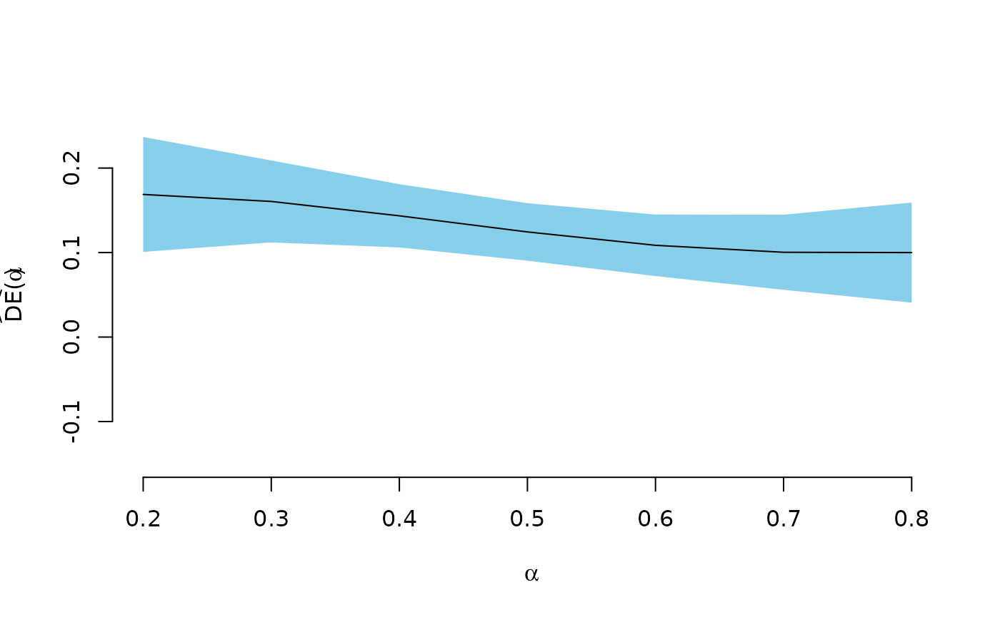
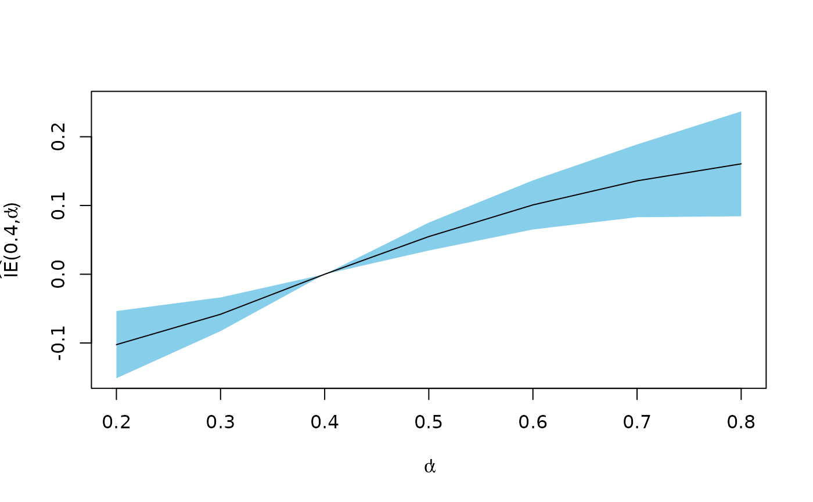

inferference
inferference_plots.Rmd## Y X1 X2 A B group
## 1 1 5.3607405 1.715527 0 0 1
## 2 0 0.1964597 1.730802 0 1 1
## 3 0 0.4846243 1.769546 1 1 1
## 4 0 0.8012977 1.715527 0 1 1
## 5 0 2.1426629 1.772158 1 1 1
## 6 0 1.2861017 1.715527 0 1 1
example1 <- interference(
formula = Y | A | B ~ X1 + X2 + (1|group) | group,
allocations = seq(.2,.8, by = .1),
data = vaccinesim,
randomization = 2/3,
method = 'simple')
deff <- direct_effect(example1)
x <- deff$alpha1
y <- as.numeric(deff$estimate)
u <- as.numeric(deff$conf.high)
l <- as.numeric(deff$conf.low)
plot(c(min(x), max(x)),c(-.15, .25), type = 'n',
xlab = expression(alpha),
ylab = expression(widehat(DE) * "(" * alpha * ")"),
bty = 'n')
polygon(c(x, rev(x)), c(u, rev(l)), col = 'skyblue', border = NA)
lines(x, y, cex = 2)
ieff.4 <- ie(example1, allocation1 = .4)
x <- ieff.4$alpha2
y <- as.numeric(ieff.4$estimate)
u <- as.numeric(ieff.4$conf.high)
l <- as.numeric(ieff.4$conf.low)
plot(c(min(x), max(x)),c(-.15, .25), type = 'n',
xlab = expression(alpha * "'"),
ylab = expression(widehat(IE) * "(" * 0.4 * "," * alpha * "'" * ")"))
polygon(c(x, rev(x)), c(u, rev(l)), col = 'skyblue', border = NA)
lines(x, y, cex = 2)
ieff <- subset(example1$estimates, effect == 'indirect')
x <- sort(unique(ieff$alpha1))
y <- sort(unique(ieff$alpha2))
z <- xtabs(as.numeric(estimate) ~ alpha1 + alpha2, data= ieff)
contour(x, y, z,
xlab = expression(alpha), ylab = expression(alpha * "'"))